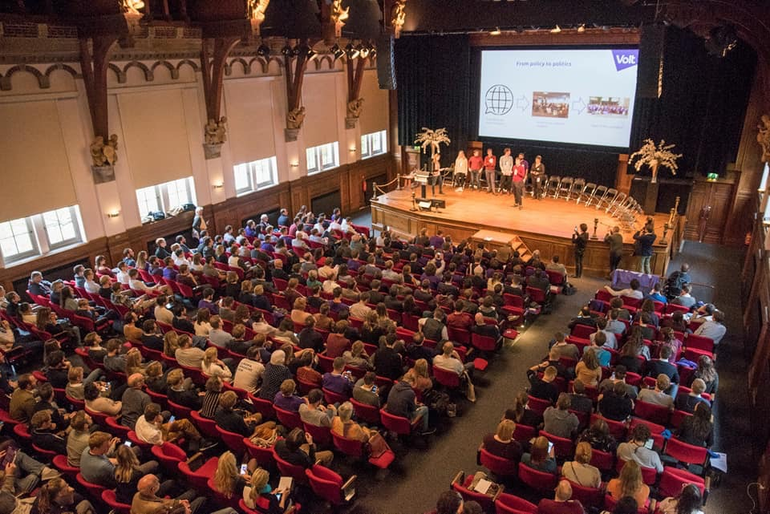
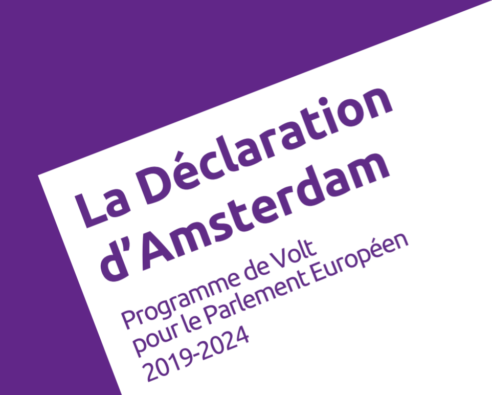
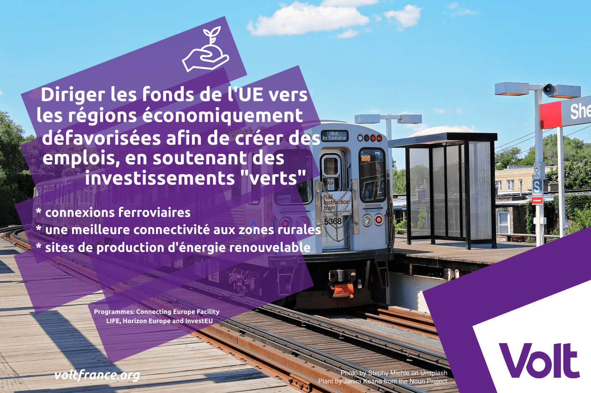
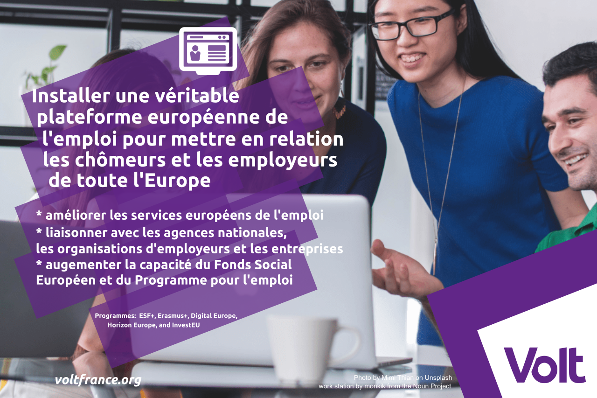
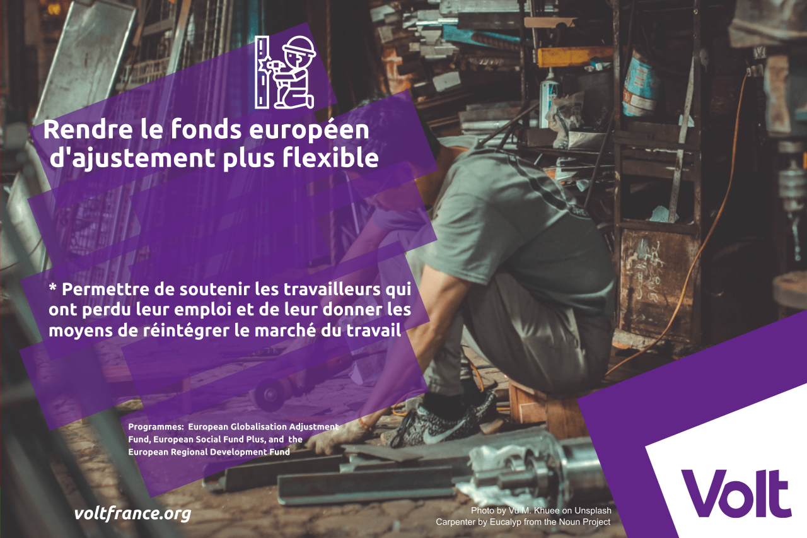

Volt... ?
- a été fondé après le vote du Brexit
- est un mouvement progressif et participatif de volontaires paneuropéens
- est actif dans 32 pays, avec des partis politiques dans treize d'entre eux
- est une plateforme qui veut permettre aux citoyennes à participer plus active à la politique
Plus de détail sur www.voltfrance.org/vision
Candidature Citoyenne

- L'idée est une liste ouverte.
- Pour les citoyens qui vont se porter comme candidate
- Placement dans la liste par un vote démocratique entre tous membres
- Aussi possible de se placer à la fin de la liste comme "appuyer"
Plus d'info sur www.candidaturecitoyenne.fr
Déclaration d'Amsterdam
- créé en collaboration des tous volontaires des pays européens qui ont voulu participer
- un projet sociétal à la fois visionnaire et réaliste
Trois parts:
- (1/3) Rénover l’Europe - union politique plus forte, pouvoir d'agir de ses citoyen, securité et responsabilitation
- (2/3) Faire de l’Europe un moteur économique - la croissance, l'investissment dans l'avenir, l'éducation
- (3/3) Bâtir une société juste et responsable - transition écologoique, immigration responsable et humaine, Œuvrant pour l’équité et l’égalité
Plus de détail sur www.voltfrance.org/vision.
Téléchargez en pfd
A) Stimuler la Croissance
- Création d'Emploi
- L'Entrepeneuriat
- Aucun laissé pour compte
Création d'Emploi - Investissements Verts
Canaliser les fonds de l'UE vers les régions en difficulté afin de créer des emplois, en soutenant des investissements intelligents et respectueux de l'environnement, tels que des connexions ferroviaires à grande vitesse, une meilleure accessibilité et connectivité aux zones rurales et des sites de production d'énergie propres et locaux.
Comment ? Nous nous engageons à garantir des investissements dans un système cohérent d'infrastructures à l'échelle de l'UE qui relie les régions, y compris les zones rurales, grâce aux possibilités de financement disponibles et à donner la priorité aux projets qui favorisent la durabilité et une plus grande valeur ajoutée pour toute la région. Nous encouragerons les investissements privés dans les régions en difficulté et les zones rurales, en soutenant les grandes et petites entreprises qui investissent dans des projets respectueux de l'environnement. Il est important de mettre à disposition des ressources économiques et du capital humain adéquats pour mener à bien ces projets. Nous soutenons le renforcement des capacités dans les États membres ou les régions les moins favorisés afin de permettre une participation publique et privée accrue aux programmes de financement qui favorisent l'éco-innovation, les transports durables et les systèmes énergétiques.
Financement ? Les ressources nécessaires au financement de notre proposition sont disponibles dans le cadre de plusieurs programmes de l'UE tels que Connecting Europe Facility, LIFE, Horizon Europe et InvestEU.
Création d'Emploi - Formation professionnelle

Augmenter les dépenses publiques consacrées à la formation professionnelle afin d'accroître l'employabilité tout au long de la vie et la compétitivité internationale des apprentis. Une attention particulière sera accordée aux régions où le chômage de longue durée est élevé.
Comment ? Nous nous efforcerons d'augmenter le financement de l'UE pour la Garantie Jeunesse, qui engage les États membres à veiller à ce que les jeunes reçoivent une offre d'emploi, d'éducation, d'apprentissage ou de formation de qualité dans les quatre mois suivant leur chômage ou la fin de leurs études. Nous examinerons la mise en œuvre de la Garantie Jeunesse en tandem avec les acteurs nationaux afin d'éliminer les inefficacités et d'améliorer l'efficacité de l'initiative. Nous nous concentrerons sur les régions où le chômage des jeunes est élevé et veillerons à une augmentation significative des crédits budgétaires de l'UE au cours de la prochaine période budgétaire (2021-2027), en évaluant les synergies avec d'autres programmes pour optimiser l'allocation des ressources. Nous proposerons des expériences d'apprentissage pour des carrières non universitaires en développant ErasmusPRO, une action du programme Erasmus+ visant à soutenir le placement de longue durée des apprentis à l'étranger. Un programme ErasmusPRO à plus grande échelle permettra de lutter contre le chômage grâce à des stages et des apprentissages de qualité, offrant ainsi de nouvelles possibilités d'emploi. En outre, il encouragera l'inclusion sociale en facilitant l'accès aux participants issus de milieux défavorisés et encouragera le multilinguisme. Pour en faire un nouveau programme phare ...
...de l'UE, en élargissant le champ d'application d'Erasmus+, il est important d'améliorer la coordination avec d'autres programmes tels que la Garantie Jeunesse, et d'accroître son adaptabilité à la situation spécifique de chaque État membre. De plus, nous encouragerons l'amélioration de la visibilité et de la participation au Corps européen de solidarité, qui offre aux jeunes la possibilité de faire du volontariat ou de travailler à des projets dans leur propre pays ou à l'étranger dans un large éventail de secteurs engagés dans des activités de solidarité. La participation au Corps servira le double objectif d'améliorer l'employabilité et de rassembler les jeunes afin de bâtir une société plus inclusive, de soutenir les personnes vulnérables et de répondre aux défis sociétaux par une expérience inspirante et stimulante.
Financement ? Les ressources nécessaires au financement de notre proposition sont disponibles dans le cadre de plusieurs programmes de l'UE tels que Youth Guarantee, ErasmusPRO, ESF+, European Solidarity Corps, InvestEU, Erasmus+, et Horizon Europe.
Création d'Emploi - Plateforme de l'emploi
Faciliter la recherche d'un emploi dans toute l'Europe, en mettant en place une véritable plateforme européenne de l'emploi pour mettre en relation les chômeurs et les employeurs de toute l'Europe. Développer les services européens de l'emploi (EURES) et favoriser une meilleure coopération avec le secteur privé afin de progresser vers un marché du travail véritablement uni.
Comment ? Nous voulons nous assurer que l'efficacité et la visibilité du Service européen de l'emploi (EURES) sont améliorées en nous engageant avec les agences nationales pour l'emploi, les organisations d'employeurs et les entreprises pour mettre les postes vacants pertinents dans un format EURES uniforme et révisé. Cette harmonisation augmentera le nombre d'offres d'emploi au niveau européen, facilitera la recherche d'emploi et rendra les placements plus efficaces. Les États membres utiliseront également EURES pour fournir des informations sur la pénurie et l'excédent de main-d'œuvre par secteur. Nous proposons d'utiliser des algorithmes pour faire correspondre l'offre et la demande grâce à l'analyse des données, afin de prévoir et de réagir aux futures pénuries d'emplois au niveau géographique et sectoriel. L'utilisation de ces algorithmes permet d'adapter les mesures préventives avant que des pertes d'emplois ne surviennent. Nous plaidons en faveur de l'amélioration de la capacité du Fonds Social Européen et du Programme pour l'emploi et l'innovation sociale à agir en tant qu'instruments inclusifs et à faciliter la mobilité de la main-d'œuvre en prêtant attention au placement réussi des groupes les plus vulnérables, comme les jeunes ...
... sans emploi, et aux régions les plus touchées par le chômage. Des ressources et un savoir-faire adéquats de l'UE devraient être fournis pour moderniser les services nationaux de l'emploi et contribuer à les rendre plus efficaces, en se concentrant sur les pays dont les services sont en retard, afin de leur permettre de mener à bien leurs activités.
Financement ? Les ressources nécessaires au financement de notre proposition sont disponibles dans le cadre de plusieurs programmes communautaires, tels que FSE +, Erasmus +, Digital Europe, Horizon Europe et InvestEU.
Création d'Emploi - Compétence Numérique

Investir dans des programmes de soutien à la main d'œuvre numérique décentralisée, en fournissant des dispositifs et une formation aux compétences numériques à faible coût. Les investissements seront concentrés sur les régions où le taux de chômage est élevé et où le niveau de compétences numériques ou d'accès à la technologie est faible.
Comment ? Nous encourageons le développement des compétences numériques en apportant un soutien financier par le biais de ressources de l'UE, afin d'encourager l'accès à la propriété d'appareils technologiques pour les personnes à faible revenu et sans emploi. Pour ce faire, nous nous appuierons sur les services nationaux de l'emploi pour sélectionner ceux qui ont besoin d'un tel soutien, étant donné qu'ils ont une meilleure vue d'ensemble de la situation locale et sont en mesure d'offrir des formations et des solutions sur mesure aux personnes en recherche d'emploi. Nous encourageons l'utilisation de plates-formes de formation en ligne et le développement de nouveaux outils éducatifs en travaillant en tandem avec les universités, les prestataires de formation et d'autres partenaires sociaux pour doter les chômeurs des compétences nécessaires à leur réinsertion sur le marché du travail. Nous encourageons l'établissement d'un dialogue avec les services publics de l'emploi afin de créer des programmes qui utilisent de nouveaux outils, tels que des cours en ligne massifs, pour former les demandeurs d'emploi à la recherche d'un emploi ou pour gagner leur vie à distance par le biais de coachs spécialisés. Ces programmes seraient également ...
... accessibles numériquement dans toute l'Europe, ce qui permettrait de cibler plus facilement ceux qui ne sont pas étudiants, employés ou en formation.
Financement ? les ressources nécessaires au financement de notre proposition sont disponibles dans le cadre de plusieurs programmes communautaires tels que FSE+, Erasmus+, Digital Europe, Horizon Europe et InvestEU.
Entrepeneuriat - Guichet Unique Digital

Simplifier la façon de créer son entreprise en créant le ‘European Digital One Stop Shop’. Cela garantira la possibilité de monter son entreprise en 3 jours ouvrables à un coût administratif minimum. (En complément à ça les frais d’enregistrement et autres processus seront harmonisés. Les interactions entre gouvernements seront rationalisées à travers l’UE→Pas bien compris le sens de la phrase).
Comment ? Nous proposons d’améliorer l’EIAH en l’intégrant dans l’EFSI pour qu’il puisse, en plus de son rôle d’aide à l’investissement des PME, agir comme un guichet unique en aidant les sociétés à pouvoir s’enregistrer dans chaque Etat membre de l’UE. Une fois leur rôle institutionnalisé, les EIAH à travers l’Europe vont harmoniser les procédures d’enregistrement et créer le European Digital One Stop Shop. Nous préconisons de modifier le droit européen des sociétés pour harmoniser les actes des sociétés des États membres. Les lois sur l’insolvabilité, en cours de négociation dans l’UE, doivent être plus ambitieuses et alignées les unes sur les autres pour permettre de plus grandes opérations transfrontalières. Nous devons créer un cadre réglementaire pour améliorer l'environnement des entreprises, des investisseurs, parties prenantes et entreprises. Cela renforcera le marché unique en modernisant et en harmonisant les consommateurs, les contrats et les entreprises législations, ainsi que par la mise en œuvre de mesures plus solides de non-discrimination et de lois d'égalité. Nous encourageons les entreprises à s’inscrire, conformément au droit des sociétés de l’UE, en tant que sociétés européennes, ce qui vise à renforcer la notoriété et la marque de la SE. Cela permettrait aux entreprises de transférer facilement vers - ...
... ou de fusionner avec - des entreprises d’autres États membres. 3000 entreprises se sont déjà enregistrées en tant que SE, mais la plupart des inscriptions proviennent d'un nombre limité d'États membres. Afin de créer un marché unique équitable et inclusif, il est important de promouvoir les SE dans tous les pays de l’UE, ainsi qu’un ensemble de règles européennes communes en matière de SE et d’autres harmonisations du droit européen des sociétés et du droit du travail. Nous investirons dans l’éducation à l’entrepreneuriat inclusif pour assurer l’accès à ceux qui sont moins représentés sur le terrain, y compris les femmes et les filles, et ceux confrontés à l’exclusion sociale et à la marginalisation, comme les minorités ethniques, les migrants et les réfugiés. Nous croyons que le moyen de surmonter les obstacles dressés face à ces groupes se fait par des réseaux peer-to-peer, et des plateformes de partage de bonnes pratiques.
Financement ? Les ressources pour financer notre proposition sont disponibles sous plusieurs programmes de l'UE tels que Erasmus pour les jeunes entrepreneurs, le programme du Marché unique et ESF +.
Entrepeneuriat - Investissements "futur"

Stimuler l'entrepreneuriat et la création d'emplois en intensifiant les investissements dans des technologies telles que la blockchain, le big data, l’intelligence artificielle et les technologies du cloud pour aider les secteurs stratégiques de l'Europe à être compétitives.
Comment ? Premièrement, nous voulons renforcer le Fonds européen pour investissements stratégiques en permettant de financer l’innovation par des investissements directs, ainsi que par l’adoption de règles plus favorables au risque pour son capital. En outre, Volt propose de contribuer à la compétitivité et à la durabilité des entreprises en fournissant des fonds dans les régions moins favorisées et ceux qui présentent un intérêt commun pour plusieurs États membres moyennes entreprises (PME) qui réinvestissent le capital excédentaire dans entreprises, recherche et développement, programmes de formation pour leurs travailleurs, ou créer de nouveaux emplois. De plus, nous faciliterons l'accès au financement pour les PME innovantes - celles qui contribuent à la transition vers un environnement sobre en carbone et résilient au changement climatique – pendant les étapes de la création, de l'expansion et la transmission de l’entreprise. Cet accès au financement devrait prendre la forme de garanties de prêt et prises de participation, un meilleur accès aux marchés et de meilleures conditions de création et de croissance en améliorant la visibilité des instruments de financement tels que la compétitivité des entreprises et des petites et moyennes entreprise et l’innovation dans les programmes de PME. Enfin, nous promouvons les entreprises sociales, y compris les modèles commerciaux alternatifs ...
... telles que les coopératives et les mutuelles, et nous voulons assurer un meilleur accès aux financement des groupes sous-représentés dans le domaine de l'entrepreneuriat. Nous voulons lutter contre les pratiques néfastes telles que le shark de prêt envers les groupes vulnérables, en particulier dans le domaine de la micro-finance.
Financement ? Les ressources pour financer notre proposition sont disponibles sous plusieurs programmes de l'UE tels que Erasmus pour les jeunes entrepreneurs, Marché unique Programme, ESF +, InvestEU, Europe numérique, Horizon Europe et LIFE.
Aucun laissé pour compte - Revenu Minimum

Garantir un niveau de vie décent, en adoptant un revenu minimum supérieur au seuil de pauvreté dans tous les États membres.
Comment ? Afin de mettre réellement en œuvre le principe du Socle Européen des Droits Sociaux, qui affirme que 'des prestations de revenu minimum adéquat doivent être garanties à ceux qui ne disposent pas de ressources suffisantes pour vivre dans la dignité à tous les stades de la vie; un accès effectif aux biens et aux services doit leur être garanti', il est nécessaire que les droits sociaux deviennent un élément central des lignes directrices pour l'emploi définies par le semestre européen, le cycle annuel de coordination politique. Nous veillerons à ce que chaque principe du Socle soit adopté et mis en place dans tous les États membres. Nous proposons d'optimiser les ressources économiques afin de garantir que les fonds appropriés se concentrent sur l'inclusion sociale dans tous les pays. Cela permettra aux États membres de financer, en fonction de leurs besoins, des projets visant à assurer un revenu minimum, afin de sortir les personnes et les familles de la pauvreté et de leur offrir des conditions de vie adéquates. Pour faire face aux changements radicaux qui se produisent dans la société et sur le marché du travail, nous devons faire preuve d'audace et proposer des solutions. C'est pourquoi nous proposons de tester de nouveaux modèles de protection sociale, tels que le revenu de base universel (RBU). Pour comprendre l'impact du RBU en tant qu'instrument politique, nous avons ...
... besoin de programmes pilotes à grande échelle bien conçus, gérés par des institutions locales ou nationales sous la direction générale de l'UE, qui seront essentiels pour concevoir les projets pilotes, les suivre et en évaluer les résultats. Par conséquent, nous nous engageons à créer un groupe d'experts de haut niveau, composé de représentants des gouvernements des États membres, du Parlement européen et de la Commission, ainsi que de représentants du Comité des régions, d'universitaires, de partenaires sociaux et d'autres parties prenantes concernées, afin de mener une analyse approfondie du RBU et de concevoir un plan d'action concret à mettre en œuvre. Pour commencer, le RBU devrait être testé dans 5 localités différentes en Europe avec au moins 10.000 participants, pour une période d'au moins 5 ans.
Financement ? Les ressources nécessaires au financement de notre proposition sont disponibles dans le cadre de plusieurs programmes communautaires tels que le FSE+ et le Fonds européen de développement régional.
Aucun laissé pour compte - Utislier le fonds européen d'ajustement
Soutenir les personnes ayant perdu leur emploi dans des régions ou des secteurs touchés par des crises économiques, en doublant le financement du Fonds européen d'ajustement à la mondialisation et en le rendant plus flexible. Ces mécanismes faciliteront la transition vers de nouveaux emplois lorsqu'une entreprise cesse ses activités en raison de difficultés économiques ou quitte l'UE.
Comment ? Nous voulons simplifier le Fonds européen d'ajustement à la mondialisation et le rendre plus complet, en lui permettant de soutenir les travailleurs qui ont perdu leur emploi et de leur donner les moyens de réintégrer le marché du travail. Nous explorerons les synergies du Fonds avec les ressources déjà disponibles pour fournir un soutien financier et une formation en temps de crise, tout en évaluant les demandes individuelles. Pour atteindre cet objectif, il est fondamental d'impliquer les institutions européennes, les États membres et les autorités locales dans le processus, ainsi que les représentants des travailleurs et des employeurs.
Financement ? Les ressources proviendront du Fonds européen d'ajustement à la mondialisation, activé conjointement avec le Fonds social européen Plus et le Fonds européen de développement régional, pour optimiser les synergies offertes par ces fonds.
B) Investissment dans l'avenir
- Innovation
- L’avenir du travail
Innovation: Doubler les dépenses R&I

Assurer l'excellence européenne à l'avenir en doublant les dépenses consacrées à la recherche et au développement pour les porter à 4 % du PIB de l'UE d'ici 2025. Exhorter les pays à investir dans l'innovation pour relever les défis environnementaux et sociaux de demain.
Pourquoi ? La recherche et le progrès technologique sont à la base de notre niveau de vie élevé. Pour garantir notre bien-être futur et rester compétitifs par rapport aux puissances traditionnelles telles que les États-Unis et le Japon, et aux puissances montantes telles que la Chine et l'Inde, nos programmes de recherche européens et nationaux doivent être intensifiés et les dépenses doivent être sensiblement accrues.
Comment ? Le financement centralisé de la R&D au niveau de l'UE, par le biais des programmes-cadres de recherche du cadre financier pluriannuel, favorise la collaboration et la concurrence internationales, poussant la qualité de la recherche au-delà des niveaux que les États membres peuvent atteindre individuellement et en réduisant la duplication des efforts. C'est pourquoi nous préconisons d'augmenter les dépenses consacrées à la recherche et à l'innovation pour atteindre 160 milliards d'euros pour le prochain programme-cadre de recherche, dénommé Horizon Europe. Nous devons également augmenter le financement de la R&D en dehors du cadre financier pluriannuel par le biais de partenariats public-privé en augmentant les investissements dans des initiatives adaptées, telles que les entreprises communes ou les initiatives phares, afin de traiter de manière plus souple les thèmes et objectifs de recherche urgents. Notre objectif est de mieux aligner les investissements communautaires et nationaux en matière de R&D afin de concentrer efficacement les efforts de recherche et d'accroître l'efficacité. Il s'agit notamment de simplifier le paysage du financement de l'UE, d'élaborer un programme stratégique commun de R&D pour l'Espace européen de la recherche, axé en particulier sur des thèmes présentant une valeur ajoutée communautaire, d'accroître le rôle des centres communs de recherche et d'encourager les États membres à élaborer des stratégies nationales pluriannuelles de R&D qui viennent compléter le programme commun. En outre, nous pensons qu'il est possible de mieux capitaliser les idées et de traduire davantage de recherche en innovation en améliorant les écosystèmes entrepreneuriaux dans les parcs technologiques nationaux et régionaux par l'expérimentation de politiques (réglementaires) et le financement de programmes opérationnels traitant de compétitivité et d'innovation. Enfin, nous voulons encourager les investissements privés dans la R&D et les investissements industriels qui traduisent la recherche universitaire/publique en innovation en encourageant les États membres à mettre en place des crédits d'impôt à la R&D pour la collaboration et le cofinancement entre universités et entreprises. Les mesures d'incitation devraient cibler les jeunes entreprises et les entreprises qui ne sont pas affiliées à de grandes entreprises, et les investissements qui dépendent d'un financement de l'UE devraient également être éligibles à ces crédits d'impôt. Enfin, notre objectif est d'élaborer une politique fiscale globale de l'UE en matière de R&D qui permette toujours aux États membres et aux régions de répondre aux besoins locaux.
Financement ? Les ressources pour financer notre proposition sont principalement disponibles dans le cadre d'Horizon Europe.
Innovation: Intelligence Artificielle Fédéral

Devenir brillant dans le domaine de l'intelligence artificielle, en créant le Bureau de coordination de haut niveau de l'intelligence artificielle de l'UE, afin de rassembler les meilleurs esprits et entreprises dans ce domaine, de mettre en place une initiative européenne en matière d'intelligence artificielle et d'établir des normes éthiques exigeantes dans ce domaine.
Comment ? Le développement de l'intelligence artificielle nécessite une initiative européenne en matière d'intelligence artificielle : i) pour atteindre une masse critique afin d'être compétitif au niveau mondial, car aucune initiative nationale ne peut à elle seule faire face à la concurrence d'autres acteurs clés, tels que les États-Unis ou la Chine, ii) pour garantir que la technologie d'intelligence artificielle est construite en Europe et basée sur les valeurs humaines de l'UE, et iii) pour se préparer aux effets indésirables de l'intelligence artificielle, comme le chômage involontaire. Pour ce faire, nous nous efforcerons d'assurer un financement adéquat de l'initiative européenne d'IA, y compris pour le bureau de haut niveau chargé de l'IA, et nous soutiendrons la Commission européenne dans son initiative de recherche et de développement sur l'IA annoncée. Cela inclut un objectif budgétaire de 20 milliards d'euros par an d'ici 2020 pour soutenir les efforts européens.
Financement ? Les ressources nécessaires au financement de notre proposition sont disponibles dans le cadre de plusieurs programmes communautaires tels que Digital Europe, InvestEU et Horizon Europe.
Rendre l'intelligence artificielle disponible et accessible à tous, en portant le soutien de la Banque européenne d'investissement aux investissements en intelligence artificielle à au moins 1 milliard d'euros par an d'ici 2020 et en mettant en place une plate-forme centralisée d'intelligence artificielle à la demande pour fournir un point d'accès unique aux ressources clés de l'IA dans l'UE.
Comment ? Nous voulons rendre l'IA disponible et accessible en créant une 'plate-forme d'IA à la demande 'pour fournir aux développeurs d'IA et aux entreprises un point d'accès européen financé par des fonds publics aux connaissances, aux données et à la puissance informatique nécessaires pour rivaliser avec les acteurs mondiaux. Pour mettre en œuvre la plate-forme, la Commission européenne peut s'appuyer sur le réseau existant de plus de 400 centres d'innovation numérique. Nous nous efforcerons d'attirer les investissements privés dans l'IA, notamment en augmentant le soutien de la Banque européenne d'investissement aux investissements dans l'IA à au moins 1 milliard d'euros par an après 2020, et en déployant le programme paneuropéen de fonds de capital-risque - Venture EU - un fonds de 2,1 milliards d'euros pour stimuler les investissements dans de nouvelles entreprises innovantes et dans les grandes entreprises européennes.
Financement ? The resources to finance our proposal are available under several EU programmes such as Digital Europe, InvestEU and Horizon Europe
L’avenir du travail: Couverture Universelle

Protéger la dignité et sécurité des travailleurs, surtout dans nouveaux secteurs. Prévoir les travailleurs avec des contrats non-traditionnelle, longue-terme avec des standards de protection comparable au standards appliqué aux formes de travailles traditionnelles.
Comment ? ments qui ne sont pas couverts convenablement par la sécurité sociale et sont victime à un risque élevé de pauvreté. Des grands changements dans le marché du travail, aggraver par l’émergence de nouveaux modèles de travail, rendent impératif le besoin d’ajuster les mécanismes de protection sociale qui sont basée sur des formes emploi traditionnels. Nous allons supporter des États-Membres à reformer leur sécurité sociale pour pouvoir fermer des trous de couverture avec le but de garantir une minimum protection concernant les sans emploi, maladie et soins de santé, maternité ou paternité, accidents de travails et maladies d’occupation, invalidité et vieillesse pour des travailleurs non-traditionnelles et les travailleurs indépendants. Nous allons le faire à travers les résultats d’un tableau de bord social et l’implémentation ponctuelle des lignes directrices pour l’emploi. Ceci fourniront la base pour des recommandations spécifiques pour un pays. Ces recommandations résultent du Semestre Européen, le cycle annuel du coordination politique. Pour éviter de la compétition injuste, notamment entre des jobs online et offline, nous allons mettre en place des schèmes à travers l’UE. Ces schèmes seront définis avec le support des partenaires sociales Européen et vont nivelez le terrain de jeu et assure ...
... que les pays respectent les mêmes obligations envers les travailleurs leurs accès au protection social, n’importe s’ils sont indépendants ou employé.
Financement ? Parce que nous voulons coopération avec les Social Partner, les lignes budgétaires pour le Dialogue Social Européen peuvent être utilisé pour conduire des études et pour dispersé les meilleurs pratiques.
L'avenir du travail: Travail flexible

Créer des lieux de travailles flexibles via un Acte pour le Choix du Temps de Travail à travers l’UE, permettant les travailleurs et employeurs à négocier des formes flexibles de travailles qui reflètent les besoins de l’individu, l’équipe et le business.
Comment? Nous allons encourager le dialogue social en forme de consultation et négociations entre les partenaires sociaux. En général les accords collectifs au niveau des secteurs complets sont la meilleure manière pour renforcer la position de négociation des travailleurs, et simultanément ils supportent les business-micro et les experts de sujet qui comptent sur des accords pareils quand ils n’ont pas une capacité interne, personnelle ou le know-how pour conduire des négociations au niveau de l’entreprise. Nous allons créer un environnement favorable pour des accords au niveau de l’entreprises, permettant des lieux de travail et des temps de travail flexible et en accordance avec les besoins de tous les parties impliquées. Cela sera réalisée par le rédaction d’un Acte pour le Choix du Temps de Travail après une consultation multi-secteurs impliquant tous les partenaires sociaux (travailleurs, employeurs, gouvernements, et organisations civiques) qui ont un focus spécifique, comme famille et santé, sur le niveau national ou le niveau UE. Donnant la variété des préférences du travailleur, les besoins des employeurs et les circonstances nationales, ils deviennent difficiles de à développer des régulations uniformes pour tous les situations possibles. Au lieu, les politiques du ‘Choix du Temps du Travail’...
... visent une ‘autorégulation réglementé’, fournirent les limites légales et protection de base, habilitent les partenaires sociaux dans leur cherche pour des solutions balancées, spécifiques pour certaines situations.
Financement? Pas applicable, cette proposition n’a pas de cout pour le budget EU.
L'avenir du travail: Les défis de demain

Prépare la force de travail pour les défis de demain, par réformer et adapter les Conseils des Compétences des Secteurs Européen et les faire rechercher les compétences requis dans la future. Ceci va renforcer les synergies entre les secteurs publique et privée.
Comment ? Nous allons promouvoir les reformations et les adaptations des Conseils des Compétences des Secteurs Européen pour acquérir et comprendre les compétences requis dans chaque secteur, tenter d’anticiper l’impact du déploiement du Quatrième Révolution Industrielle. À présent, la coopération envers les pays UE est rare et des Conseils de Secteur UE vont renforcer l’efficacité des conseils nationaux et ont un impact positive sur la réactivité des système d’éducations au besoin du marché du travail. Pour être certain que cette stratégie commune est effective, les Conseils doivent consister des représentatives des partenaires sociaux nationaux et Européen, garantissant que les résultats atteints tous les travailleurs et employeur envers tout l’Europe. Les Conseils vont avoir un rôle conseillant envers les créateurs de politiques nationaux et Européens, aussi bien que les entreprises et les travailleurs en ce qui concerne le marché du travail, le développement des compétences, training vocative et perfectionnement des compétences. Les Conseils vont formuler des recommandations concernant l’utilisation optimale des programmes Européens existants pour financer les mesures convenues plus facilement pour travailleurs et employeurs. Nous allons initier un processus publique consultative Work 4.0 au niveau ...
... Européen et explorèrent les values de bases changeants concernant le travail à travers l’Europe, et informeront la formulation politique au niveaux d’États-Membres et UE.
Financement ? Les ressources pour cette proposition sont disponibles sous Erasmus+ et pour des actions complémentaires ESF+.
C) Accorder la priorité à l’éducation
- Education
- Volta Programme
L'Éducation: Programmes d'échanges de l'UE

Permettre au plus grand nombre de personnes de découvrir différents pays européens, en augmentant le budget des programmes d'échanges de l'UE (Erasmus+), en particulier pour les élèves du secondaire, les apprentis et les étudiants défavorisés.
Pourquoi ? Les effets d'intégration d'Erasmus doivent être reproductibles à plus grande échelle et doivent être accessibles à tous les enfants et étudiants en Europe. De cette manière, nous créerons les racines et le tissu d'une société européenne qui inclut tout le monde. La mobilité dans le cadre du programme Erasmus 2021-2027 devrait tripler pour atteindre 12 millions de personnes. Jusqu'à présent, le programme Erasmus a surtout bénéficié aux étudiants universitaires qui ont grandi dans un contexte international, tandis que d'autres groupes se sont trouvés exclus de cette expérience. Les nouvelles possibilités de mobilité doivent donc s'adresser en particulier aux personnes qui ont traditionnellement fait un usage limité des possibilités de mobilité.
Comment ? Volt ciblera le soutien financier à la mobilité, en mettant l'accent sur les écoles secondaires, les étudiants et les écoles défavorisés, et par l'apprentissage, ainsi que sur l'expansion du service volontaire européen. En outre, nous améliorerons la diffusion de l'information sur les possibilités offertes par Erasmus grâce à une meilleure collaboration entre la DG Éducation et culture et les institutions nationales et régionales. Cela renforcera l'ouverture vers les régions, les écoles et des groupes qui ont jusqu'à présent été mal desservies par le programme Erasmus. Enfin, nous étendrons le programme Erasmus et son budget pour connecter les écoles primaires et secondaires dans toute l'Europe dans le but de faciliter au moins une semaine d'expérience scolaire transfrontalière pour chaque étudiant d'ici 2025.
Financement ? Les ressources peuvent être trouvées dans le programme Erasmus+ et éventuellement aussi ESF+.
L'Éducation: L'apprentissage à perpétuité

Veiller à ce que chacun puisse suivre l'évolution rapide de la société, en étendant l'apprentissage tout au long de la vie à tous, tout au long de sa vie professionnelle et personnelle.
Pourquoi ? Volt considère l'éducation comme le bien qui permet l'épanouissement personnel, l'inclusion sociale et l'employabilité. Parce que les citoyens éduqués contribuent au dynamisme et au bon fonctionnement des sociétés, la disponibilité d'une éducation de qualité pour tous, tout au long de leur vie doit être reconnue comme l'un des facteurs clés pour assurer une démocratie dynamique, inclusive et exigeante.
Comment ? Nous plaidons en faveur d'un apprentissage omniprésent et gratuit (en ligne) en investissant - y compris dans le cadre d'Erasmus 2021-2027 - dans les capacités éducatives et les partenariats stratégiques pour un apprentissage numérique et personnalisé. Cela sera facilité indépendamment des infrastructures scolaires ou du nombre d'enseignants. Nous élaborerons des normes à l'échelle de l'UE pour l'accréditation et la reconnaissance mutuelle des cours en ligne, tout en fournissant aux établissements d'enseignement des États membres des lignes directrices pour le déploiement de cours en ligne agréés. Enfin, nous étendrons le plan d'action pour l'éducation numérique au-delà de l'apprentissage dans les écoles et de l'éducation formelle, et nous ferons pression pour qu'il comprenne des dispositions pour les citoyens de tous âges, conformément au cadre des compétences numériques pour les citoyens. L'adoption rapide des nouvelles technologies ...
... offre un potentiel considérable d'amélioration du bien-être général. Toutefois, le rythme rapide du développement technologique exige que nous permettions aux citoyens de suivre cette voie et d'actualiser en permanence leurs aptitudes et compétences numériques afin de récolter les fruits du progrès technologique et de ne pas être laissés pour compte.
Financement ? Les ressources des programmes Erasmus+, ESF+, InvestEU et Digital Europe seront utilisés.
L'Éducation: Aider les enseignants

Porter l'éducation à un niveau supérieur, en augmentant le financement de l'UE en faveur des enseignants et en introduisant de nouvelles méthodes et institutions pédagogiques. Cela permettra de déterminer comment les élèves apprennent le mieux et d'améliorer leur réussite scolaire.
Pourquoi ? L'environnement scolaire a un impact crucial et durable sur le développement de l'enfant et sa capacité à s'épanouir dans la vie. Pour créer un environnement scolaire approprié, nous avons besoin de systèmes scolaires performants qui protègent les élèves défavorisés sur le plan socio-économique, mettent en œuvre des pratiques de prévention dans l'enseignement primaire et fournissent aux écoles les outils adéquats et la flexibilité nécessaires pour s'adapter à la diversité des élèves et aux talents des enseignants de l'école.
Comment ? Volt veillera à ce que les écoles et les élèves de régions en difficulté puissent demander un financement communautaire suffisant pour améliorer l'état des infrastructures scolaires et des matériels pédagogiques, tels que les équipements informatiques, la connexion internet à haut débit, les équipements sportifs et les bibliothèques. En outre, nos systèmes éducatifs doivent être innovés pour offrir une éducation de la meilleure qualité possible. Pour stimuler l'innovation, nous nous efforcerons de consacrer des fonds européens dans le cadre d'Horizon Europe pour la recherche dans le domaine de l'innovation éducative qui met davantage l'accent sur le développement socio-émotionnel et les compétences comme la persévérance, la conscience professionnelle et la maîtrise ...
... de soi. Deuxièmement, nous stimulerons l'innovation dans les méthodes d'enseignement à l'échelle de l'UE en fournissant des lignes directrices et en partageant les meilleures pratiques pour mettre davantage l'accent sur la promotion de la créativité et des aptitudes et compétences d'apprentissage dans les programmes scolaires, comme la communication orale, l'art oratoire et les aptitudes écrites. Troisièmement, nous formulerons de nouvelles normes européennes, comme alternative au PISA, pour évaluer la qualité de l'éducation et la capacité des étudiants qui intègrent mieux les perspectives pédagogiques sur le développement de l'enfant et les compétences socio-émotionnelles. En outre, Volt s'emploiera à créer de nouveaux outils adéquats, tels que des points de repère, en collaboration avec les parties prenantes concernées, pour fournir aux enfants des régimes alimentaires plus sains en définissant et en appliquant une norme pour des repas sains dans les écoles, en aidant les écoles à créer ou à améliorer les cantines scolaires, en faisant participer les enfants à la préparation des repas et en visant à fournir un déjeuner (chaud) par jour parrainé par l'État d'ici 2025 aux enfants vivant dans une famille ayant un revenu situé sous le seuil de pauvreté. Enfin, nous ferons pression pour permettre à tous les élèves du secondaire en Europe de maitriser l'anglais en finançant la formation des enseignants et les programmes de langue anglaise.
Financement ? Les ressources des programmes Erasmus+, ESF+, InvestEU et Digital Europe seront utilisés.
Volta Programme: Appui financier pour les activités de formation

Etablir le « Volta Programme » de l’UE qui fournira un support financier complet pour soutenir les activités de formation, notamment le recyclage ou l’amélioration des compétences.
Comment ? Volt travaillera à la création du nouveau « Programme Volta » qui, sur le long terme, regroupera et optimisera les ressources et s’appuiera sur les bonnes pratiques déjà établies. Le but principal de ce Programme sera d’encourager la formation continue en soutenant des programmes consacrés au recyclage et à l’amélioration des compétences des travailleurs. Pour améliorer l’employabilité continue dans un environnement basé sur les connaissances, ces programmes nécessitent de fonctionner au préalable et d’être rendus accessibles en particulier aux travailleurs qui sont toujours en activité mais dans des emplois qui pourraient devenir obsolètes à court ou moyen terme. Pour pouvoir être en état de marche le plus rapidement possible, avant que le programme complet ne soit établi, cette initiative innovera en utilisant comme tremplin les initiatives européennes déjà en place, ce qui assurera que les ressources investies, conformément à notre programme complet et ambitieux de formation. Nous promouvrons les programmes de formations continues qui sont essentiels pour fournir aux travailleurs les compétences qui pourront augmenter leur ré-employabilité par tous les moyens disponibles, en augmentant leurs chance de conserver un emploi alors que les métiers et leurs exigences subissent des changements constants dans un marché du travail en rapide développement. Nous travaillerons avec les ...
... partenaires sociaux européens pour encourager une convention cadre pour donner aux travailleurs du temps (un nombre de jours minimum par an) et des ressources pour un développement professionnel des compétences, en renforçant leur employabilité sur le long terme. Nous impliquerons les instituts de recherche et les universités pour développer davantage des algorithmes et des outils faciles à utiliser pour soutenir les services d’emploi et les conseillers en orientation professionnelle, en utilisant les données les plus précises et les informations sur les parcours professionnels et les compétences requises à travers des projets pilotes proposés par le Parlement Européen. Nous encouragerons la formation pour adulte en simplifiant et en créant des opportunités de communication entre les hautes écoles et les universités, une série de réseaux d’associations européennes et des organismes du travail dans le but de développer des solutions comme l’obtention d’un diplôme via des cours en ligne, l’amélioration de l’employabilité ou simplement de se développer et augmenter le bien-être d’une façon innovante qui peut rencontrer les besoins de tous les travailleurs et qui peuvent convenir à leurs emplois du temps.
Financement ? Sur le long terme, nous proposerons d’adopter un Règlement pour instaurer le nouveau « Programme Volta ». A court terme, les ressources qui seront utilisées peuvent se trouver dans Erasmus+, DigitalEurope, Invest EU, ESF+.
Volta Programme: Transparence des connaissances

Rendre plus facile d’étudier et de travailler n’importe où en Europe en augmentant la transparence et la reconnaissance des savoirs, des aptitudes et compétences.
Comment ? Nous nous assurerons que la e-cards professionnelle, une procédure simplifiée proposée à ceux qui fournissent du travail et les services de construction pour compléter les formalités administratives exigées pour fournir des services à l’étranger, soit adoptée et complètement mise en oeuvre, ce qui rendra plus facile la reconnaissance des qualifications des professionnels dans tous les pays de l’UE en s’assurant que le Parlement adopte sa position et trouve un compromis acceptable avec le Conseil. De plus, nous nous appuierons sur le travail effectué sur la validation des formations informelles pour s’assurer qu’aucun n’effort qui améliore les compétences professionnelles ne soit gaspillé. L’objectif final est de créer un projet partagé reconnu par tous les Etats Membres de l’UE. Pour faciliter cela, nous organiserons une campagne en demandant le soutien de la Commission Européenne pour conscientiser sur ce sujet en incluant les représentants des Etats Membres mais aussi les partenaires sociaux aussi bien au niveau Européen que national.
Financement ? Pas applicable: Cette proposition n’entraîne aucun coût pour le budget de l’UE.
Volte Programme: Améliorer l'alphabétisation numérique.

Augmenter l’attention sur les compétences en informatique pour tous les âges en commençant l’enseignement en ligne et le codage à très jeune âge, en introduisant de la formation continue et des formations professionnelles et en mettant l’accent sur la santé mentale et le bien-être social des environnements digitaux.
Comment ? Nous nous engageons à inclure les compétences en informatique dans l’enseignement à tout âge. L’enseignement de la maîtrise de l’outil informatique doit débuter à un très jeune âge et continuer dans le contexte de l’apprentissage d’un métier, dans les filières des TIC et dans les initiatives de formations continuées comme le « Programme Volta ». Pour les très jeunes en particulier, la maîtrise de l'informatique devrait être accompagnée de pensée logique et rationnelle afin de s’assurer qu’ils comprennent les conséquences des technologies digitales. Volt promeut des comportements et des compétences qui mènent à un style de vie sain et durable, qui protège la santé mentale et le bien-être social dans un environnement digital en plus des compétences techniques comme le codage. Nous proposons d’utiliser l’enseignement des technologies comme outil d’inclusion sociale. A cette fin, nous étendrons les mesures publiques et de la société civile efficaces pour responsabiliser les groupes marginalisés ou sous-représentés dans le domaine digital avec une attention particulière à la réduction des inégalités hommesfemmes avec des initiatives comme WISE (Women in Science and Engineering).
Financement ? Les ressources pour financer notre proposition sont disponibles dans plusieurs programmes de l’UE comme ESF+ et Digital Europe.